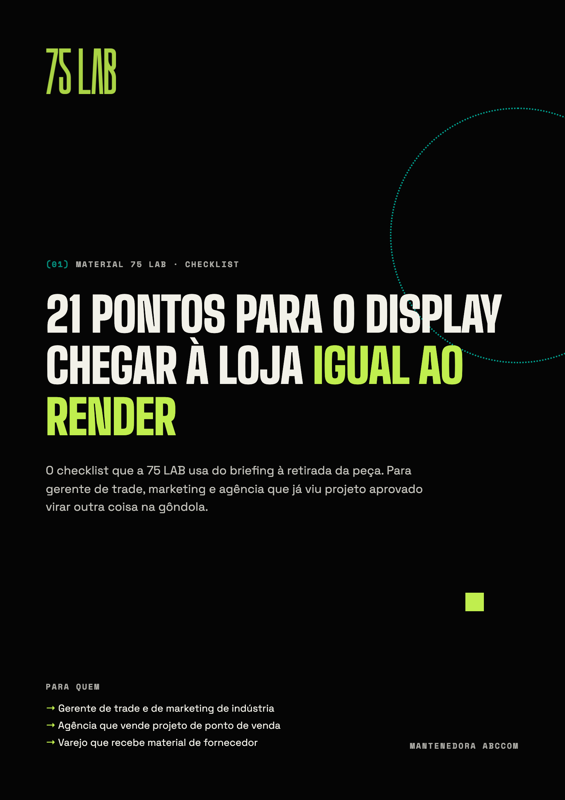

(01) Material gratuito · Checklist de execução no PDV
21 pontos para o display chegar à loja igual ao render
O checklist que a 75 LAB usa do briefing à retirada da peça. Para gerente de trade, marketing e agência que já viu projeto aprovado virar outra coisa na gôndola.
- Antes do desenho4 pontos
- Projeto4 pontos
- Engenharia e produção5 pontos
- Logística e instalação4 pontos
- Depois que está no ar4 pontos

Pronto, é seu
O download começa agora. Se não começar, use o botão.
Baixar o PDF →Quer uma segunda opinião antes de produzir a próxima peça? A 75 LAB faz um diagnóstico de PDV gratuito: uma hora de leitura da sua execução atual, com foto de loja, olhar de gôndola e três recomendações práticas.
Pedir diagnóstico gratuito →(02) Uma amostra
Três dos 21 pontos
Medida real do espaço
Foto e trena da gôndola, ponta, checkout ou ilha nas lojas prioritárias. A planta da rede não mostra a coluna, o extintor nem o degrau.
Regra de cada rede
Altura máxima, material aceito, fixação permitida e prazo de permanência. O que passa numa rede é barrado na outra.
Produto que vai na peça
Quantas unidades, peso total e giro esperado. Display que aguenta a foto e não aguenta o estoque cede na primeira semana.